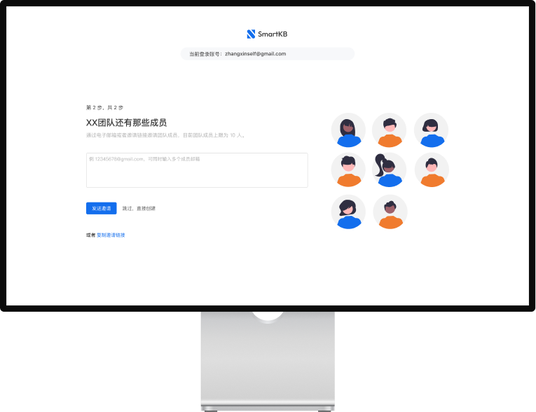
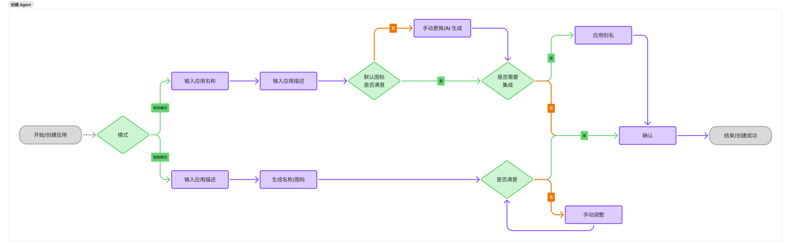
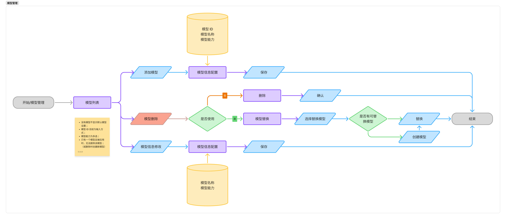
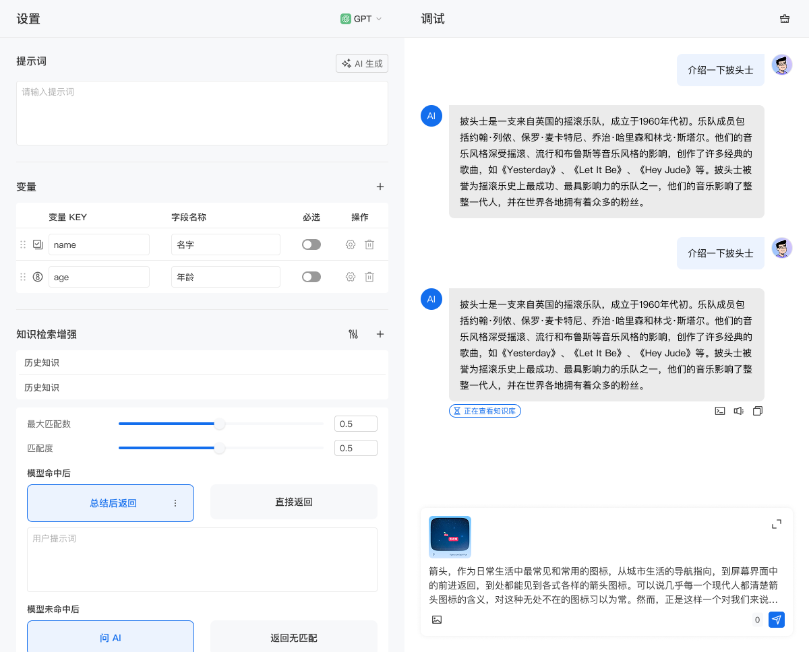
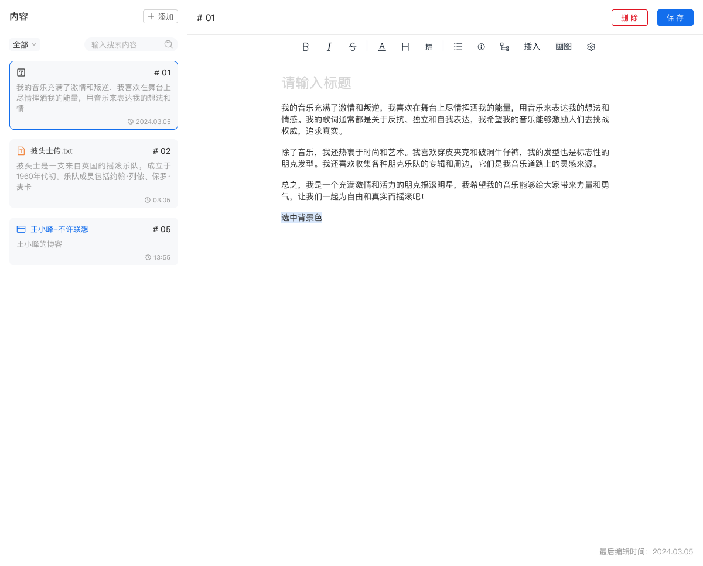
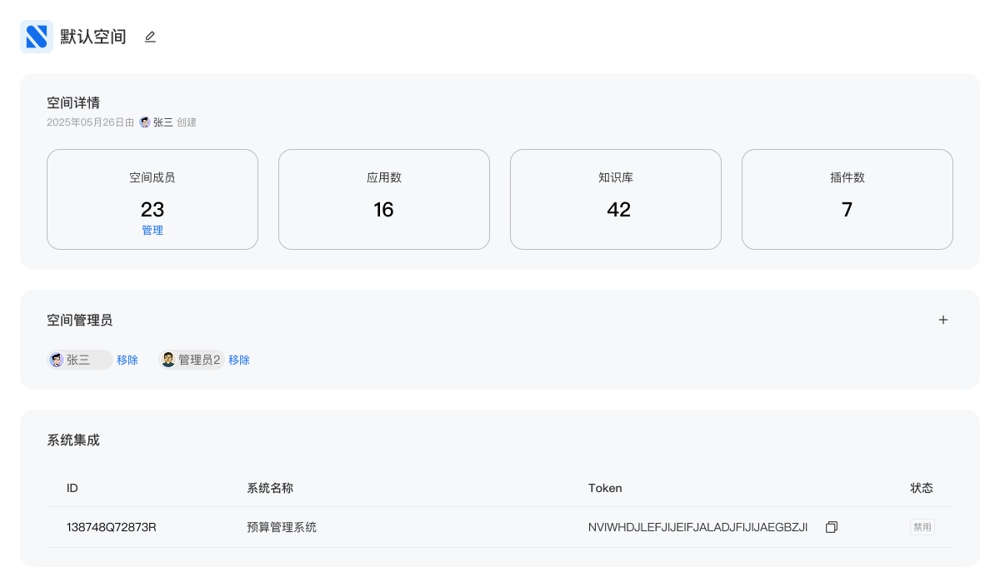
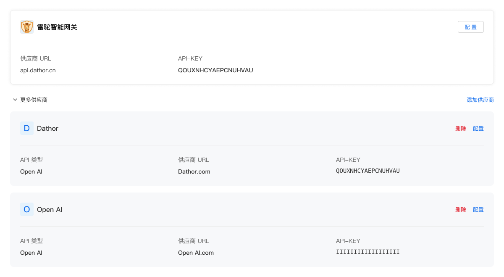

概述
随着 AI 技术迅速发展，国内企业也在探索和寻找 AI 的应用场景。在这个过程中企业会有大量的定制需求，需要根据企业的具体需求，接入需要的 AI 模型，设计出符合企业需求的 AI 应用，以及接入企业自己原有的系统。作为企业服务商，我们看到了企业对 AI 应用的需求，所以设计了雷驼 AI 中枢系统。
我作为雷驼 AI 中枢系统的产品设计师，负责梳理产品需求，设计产品功能，完成产品 UI 和用户体验设计，与开发团队合作，确保产品功能的实现。

功能设计
拿到产品需求后，首先与产品负责人进行沟通，了解产品的具体功能和用户需求。根据产品需求，开始设计产品的功能模块，产出产品功能流程图。


产品设计
设计企业专属 Agent 应用
根据企业的具体需求，设计出符合企业需求的 AI 应用，以及接入企业自己原有的系统。通过配置 Agent 的参数，企业可以根据自己的需求，自定义 Agent 的行为，包括提示词优化、知识库检索、插件调用、参数调整等。通过不断的调试和优化，企业可以确保 Agent 应用的性能和稳定性。

知识库、插件设计
知识库是 AI 应用的基础，它包含了企业自己的业务知识、数据、规则等。丰富、准确的知识库内容极大的提高了 Agent 的服务精度。
插件是 AI 应用的扩展，通过插件 Agent 可以方便地调用外部系统、服务、数据等，为模型提供了更丰富的功能。企业可以通过代码实现插件的功能，包括数据获取、数据处理、数据存储等。

空间权限管理
企业可设置多个空间，每个空间可以自定义权限，方便管理不同用户的访问权限，确保数据安全，同时可以控制不同空间可使用的模型、插件等，降低不必要的成本支出，提高系统的效率。

多模型支持
支持接入不同供应商的 AI 模型，为客户提供更精准的服务。

总结
通过设计雷驼 AI 中枢系统，我自身学习了很多 AI 技术的知识，包括生成式大语言模型原理、提示词工程、参数调整等。系统的设计和实现，成功地满足了企业对 AI 应用的需求，为企业的业务流程提供了更高效的解决方案。
目前，雷驼 AI 中枢系统已经成功地在多个企业中得到了应用，企业可以自定义 AI 应用的行为，根据企业的具体需求，设计出符合企业需求的 AI 应用。我借助这次的项目，相对系统地了解了 AI 应用的设计和实现，为我现在投入到 AI 领域的研究提供了基础。